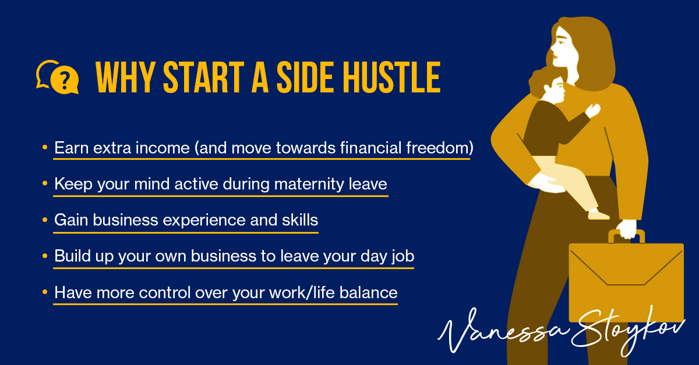
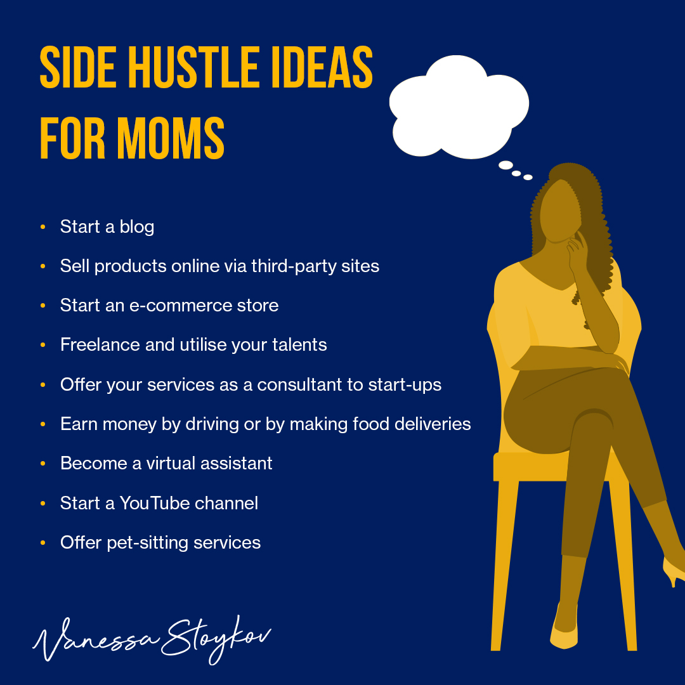

10 Side Hustle Ideas for Mums on Maternity Leave
There are many reasons to start a side hustle while on maternity leave. Not only can a side hustle provide extra income, but it could also lead to bigger and better work-from-home opportunities. You could potentially grow your side hustle into your own business to eventually leave your day job. A side hustle is also a great way to keep your mind stimulated when your baby is asleep.
Whatever your motivations, there are plenty of opportunities for women who want to work for themselves. And if you’re a mum on maternity leave, you may have a little extra time to explore something new.

What are the reasons to start a side hustle?
Side hustles are becoming more popular among Australians. The latest ABS data shows that nearly a million Australians had multiple jobs, representing a 13.1% increase from previous figures.
Here are some reasons why you might want to start a side hustle:
- Earn extra income (and move towards financial freedom)
- Keep your mind active during maternity leave
- Gain business experience and skills
- Build up your own business to leave your day job
- Have more control over your work/life balance
How to start a side hustle?
Here are some tips to get you started on your side hustle journey:
- Do some research – think about what skills and experience you have that others might be willing to pay for. There’s no point in starting a business that has no chance of being profitable!
- Find a niche – capitalise on what you are already passionate about or research to discover a new niche that might capture your interest. This will make your side-hustle journey more enjoyable and increase your chances of success.
- Get organised – set up a dedicated workspace, create a schedule and make sure you have all the tools and resources you need before you start working.
- Don’t quit your day job – at least not at first! It’s important to have regular income coming in while you’re getting your business off the ground.
- Promote, promote, promote! – Let everyone know what you’re doing and how they can benefit from your services. Use social media, word of mouth and any other marketing channels you can think of.
10 Side hustle ideas that mums can start while on maternity leave

- Start a blog.
Share personal experiences and advice on parenting, lifestyle, fashion, beauty, or any other topic you’re passionate about. There are many blogging platforms. However, WordPress is the most popular. A successful blog can lead to extra income in several different ways including, writing sponsored reviews, selling advertisement spots, selling physical and digital products and so on. - Sell products online via third-party sites.
There are plenty of online platforms such as Amazon, Etsy and eBay that make it easy to sell your products to a worldwide audience. Amazon has an FBA (Fulfilment by Amazon), which allows sellers to store products in Amazon’s fulfilment centre. Amazon also provides customer service on your behalf once you sell the products, taking care of the handling, packing, and shipping. - Start an e-commerce store.
It’s easier than ever to set up an online store and sell products to customers worldwide. Check out some of the major e-commerce platforms like Shopify, Big Commerce, Wix, WooCommerce etc. - Freelance and utilise your talents.
Use your creativity or knowledge to help businesses with their needs. For example, you could assist a company with its marketing, website, accounting, HR or social media. Explore freelance platforms like Upwork, fiverr, freelancer, to search for a side hustle that is best suited to your talent. - Offer your services as a consultant to start-ups.
Register yourself with a platform like Airtasker and use your skills and experience to help businesses in your industry with advice and guidance. - Earn money by driving or by making food deliveries
With Uber, you can use your car to provide transportation services in your city. Uber claims that its drivers earn approximately $1800/week (before costs such as fuel are deducted). - Become a virtual assistant
Offer your administrative skills to busy professionals who need help with tasks such as scheduling appointments, managing email accounts or doing research. - Teach an online course
If you’re an expert in a particular subject, why not share your knowledge with others by creating and selling an online course?
Creating an online course will take some research and effort, but if successful, it could result in ongoing passive income. Explore platforms like Udemy, Coursera to find out more. - Start a YouTube channel.
If you’re not shy in front of the camera, you could share your experiences and advice on parenting, lifestyle, fashion, beauty or any other topic you’re passionate about.
Once you build a following (subscribers) and views, you’ll have the potential to make money from ads that are promoted on your videos. Here is the link to getting started on YouTube. - Offer pet-sitting services
If you love animals, why not offer your services to pet owners in your area who need someone to look after their pets while they’re away?
What it takes to be successful in a side hustle
There’s no guarantee of success when starting your own business, but there are certain things you can do to improve your chances:
- Choose an industry or niche that you’re passionate about.
- Make sure there’s a demand for what you’re offering.
- Do your research and create a solid business plan.
- Build up a network of support, whether it’s family, friends, fellow businesses or online communities.
- Promote your business as much as possible.
- Be prepared to work hard – running your own business can be very time-consuming!
Successful Side Hustle Stories
If you are looking for some inspiration, here are some success stories of other mums who have made it big.
- Pink Lily: about us and The Sun
- news.com.au: Mum turns side hustle into multimillion-dollar business on maternity leave
- Kidspot: My maternity leave side hustle has made me $11 million
- CNBC: 34-year-old mom quit her job to work on her side hustle
Resources
- Checklist for starting a new business: business.gov.au
- ATO tax considerations for side hustles: ato.gov.au
Explore The Five Conversations About Money That Will Radically Change Your Life and subscribe for weekly insights.
This article contains general information only and does not provide personal financial, investment, legal, tax or lending advice. Consider your circumstances and seek appropriately qualified professional advice before making investment decisions.